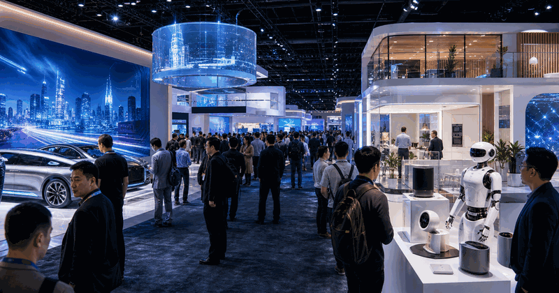

Consumer technology show
CES
CES is the major consumer-technology show for devices, mobility, smart home, screens, health tech and product ecosystems.
 More Consumer ElectronicsGo back to the topic
More Consumer ElectronicsGo back to the topicSee related technology events and nearby topics.
CES is useful because it turns vendor roadmaps into dates, demos and concrete things builders can watch.
The year slide carries dates and planning details. The parts slide keeps keynote, sessions and showcase separate.
| Year | Host / place | Country |
|---|---|---|
| 2027 | Las Vegas | |
| 2026 | Las Vegas | |
| 2025 | Las Vegas | |
| 2024 | Las Vegas | |
| 2023 | Las Vegas | |
| 2022 | Las Vegas |
Keep records as verified launch history, not generic hype.
- 6-9 Jan 2027 is the selected edition.
- Host context:
 United States.
United States. - Primary user value: Consumer electronics and product showcases.
Edition guide
CES 2027
Switch between recent editions without leaving the one-slider.
Use the official event site before booking travel or planning streams.
Current edition date from CES official site.
Streaming, registration and venue access can change by edition.
Use the parts slide for the main event structure.
The general guide stays evergreen while this slide changes by edition.